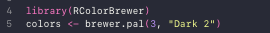
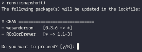
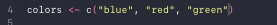
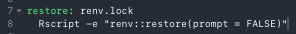

Colaborating with renv
User A initializes the lockfile using renv::init().
User A commits the following to github:
- renv.lock
- .Rprofile
- renv/activate.R
User B clones and downloads repo, and uses renv::restore() to synchronize their local project directory.
User B adds new packages to code, uses renv::snapshot() to record changes to renv.lock
User B commits renv.lock and pushes to GitHub.
User A pulls from GitHub, opens R, and uses renv::restore() to synchronize their local project directory.
Breakout Exercise
In the terminal:
quit what you are working in
print working directory
Verify you are in the correct example_project directory
create a new Git repository
Verify a git folder has been added.
Now create a github repository for example project, and copy the line of code that looks like the following into the terminal:
git remote add origin https://github.com/user_name/example_project.git
Note: you might have issues if your github isn’t cached.
For the first Commit:
display status of working directory
add all files that don’t begin with a .
display status of working directory
Verify everything was added, otherwise:
git add .thing1 .thing2 .thing3
add files that begin with .
display status of working directory
Verify everything was added.
Verify github was updated.
User B then forks the repository to make a copy of it onto their computer. Cope a similar line of code shown below into the terminal:
Open R
Close R
make report
open Rmd/report.html
Verify report runs.
Open R
- renv::remove(‘wesanderson’)
remove wes anderson package
Then open the barchart.R file to change following two lines of code:

Save.
This will return the following:

You will now have a new lockfile.
check the changes that were made
quit R
Then commit.
User A can then try these changes out in an isolated enviromnt.
git remote add userb https://github.com/user_b/example_project.git
link to user b’s repository
fetch user_b’s main branch
git checkout remotes/user_b/master
checkout user_b’s main branch
Verify changes.
git checkout -b user_b
git merge user_b
merge user_b’s branch into master
Now user A wants to change the colors again.
Then update the barchart.R file by removing lines 4 and 5, then replacing them with:

Save, then in the terminal:
make report
open Rmd/report.html
Verify report looks good.
B’s then copies the updated repository, and in the terminal:
- git remote add user_a git config advice.addIgnoredFile false
(creates path to user A github repository)
Verify colors are baseR.
git checkout -b user_a
git checkout master
git merge user_a
git push origin master
The end ~
Questions
Q: Do we have to go between bash and R and bash again to touch do anything with env?
A: Yes, but we can also do something else …
In make file add the following lines of code:

this will automate that entire process for us.
Now in terminal we can type: make restore which will cut out the middle man which avoids the need to open an R session every time.
Note: My completed replication of this example_project can be found here.